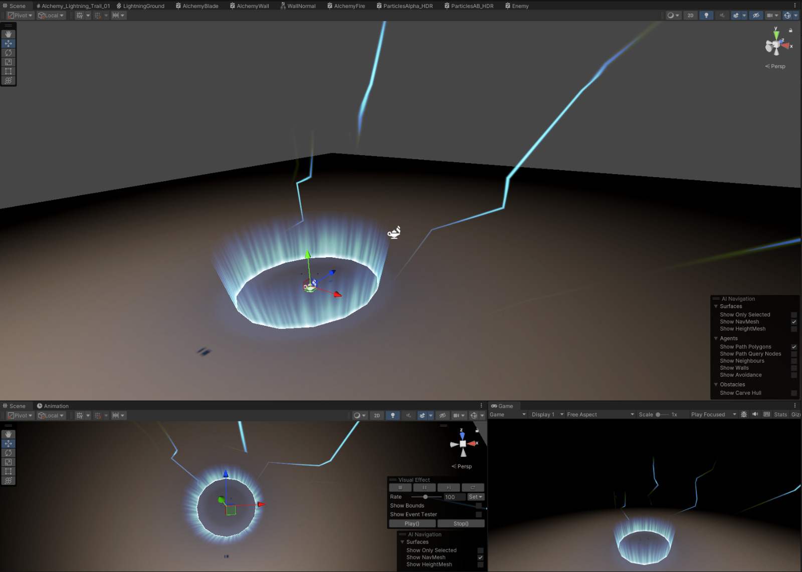
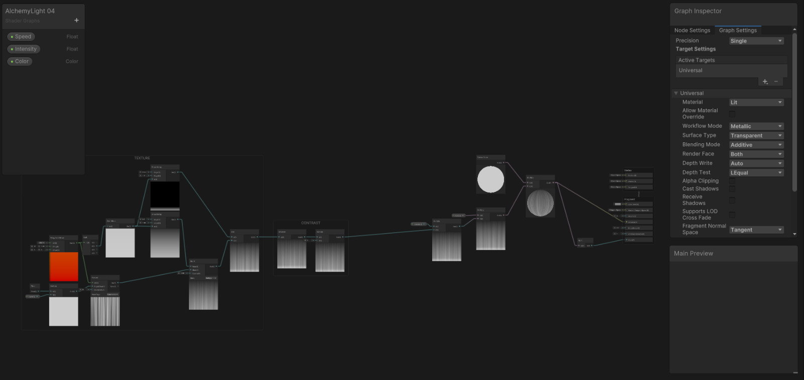
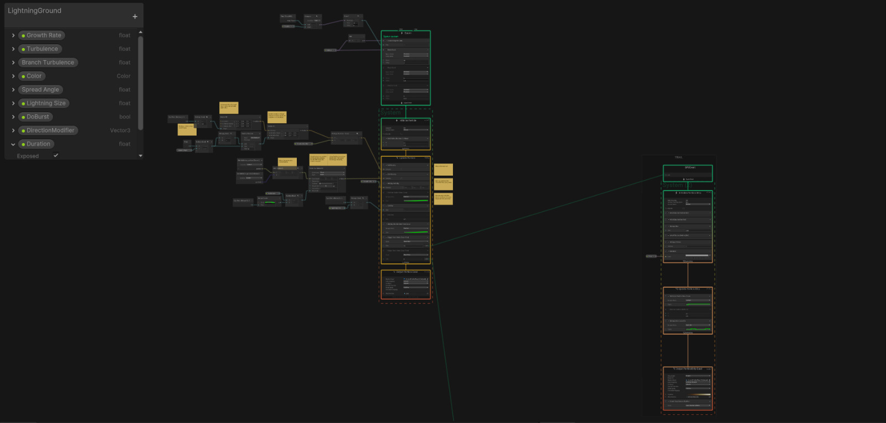

FullMetal VR
Personal experiment · Unity · XR Hands · VFX Graph · 2024
Clap, place hands on the ground, and cast, a Fullmetal Alchemist-inspired VR ritual built with Unity XR Hands gesture recognition and VFX Graph.


